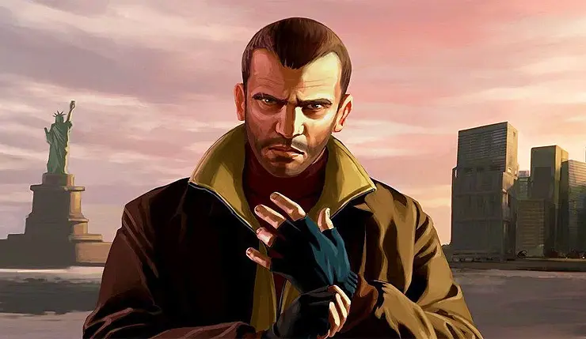
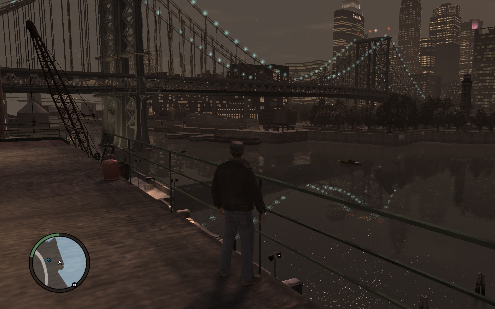
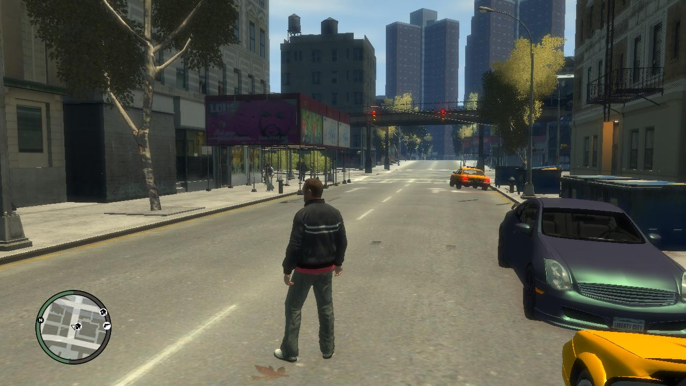
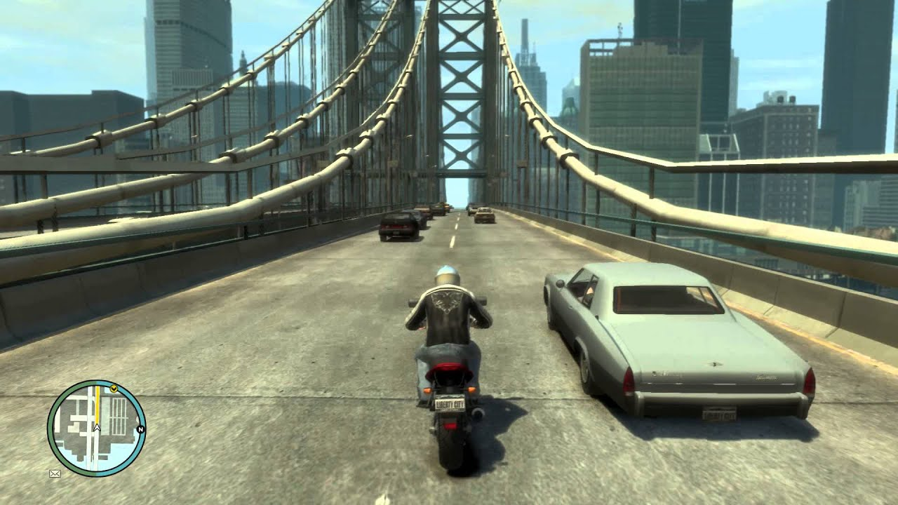

Grand Theft Auto IV is a 2008 action-adventure game developed by Rockstar North and published by Rockstar Games. It is the sixth main entry in the Grand Theft Auto series, following 2004's Grand Theft Auto: San Andreas, and the eleventh instalment overall. Set within the fictional Liberty City, based on New York City, the single-player story follows Eastern European war veteran Niko Bellic and his attempts to escape his past while under pressure from high-profile criminals. The open world design lets players freely roam Liberty City, consisting of three main islands, and the neighbouring state of Alderney, which is based on New Jersey. The game is played from a third-person perspective and its world is navigated on foot or by vehicle. Throughout the single-player mode, players control Niko Bellic. An online multiplayer mode is also included with the game, allowing up to 32 players to engage in both cooperative and competitive gameplay in a recreation of the single-player setting.[b] Two expansion packs were later released for the game, The Lost and Damned and The Ballad of Gay Tony, which both feature new plots that are interconnected with the main Grand Theft Auto IV storyline, and follow new protagonists. Development of Grand Theft Auto IV began soon after the release of San Andreas and was shared between many of Rockstar's studios worldwide. The game introduced a shift to a more realistic and detailed style and tone for the series. Unlike previous entries, Grand Theft Auto IV lacked a strong cinematic influence, as the team attempted an original approach to the story. As part of their research for the open world, the development team conducted extensive field research in New York, capturing over 100,000 photographs and several hours of video. The developers considered the world to be the most important element of the game; though not the largest map in the series, they considered it comparable in scope due to its verticality and level of detail. The budget climbed to over US$100 million, making it one of the most expensive video games to develop. Grand Theft Auto IV was released for the PlayStation 3 and Xbox 360 consoles in April 2008, and for Windows in December. Upon release, the game received critical acclaim, with praise particularly directed at the narrative and open-world design. Grand Theft Auto IV broke industry sales records and became the fastest-selling entertainment product in history at the time, earning US$310 million in its first day and US$500 million in its first week. Considered one of the most significant titles of the seventh generation of video games, and by many critics as one of the greatest video games of all time, it won year-end accolades, including Game of the Year awards from several gaming publications. It is among the best-selling video games with over 25 million copies sold by 2013. The game generated controversy, with criticism directed at the game's depiction of violence and players' ability to drink-drive. Its successor, Grand Theft Auto V, was released in September 2013.
   To buy the game open this link